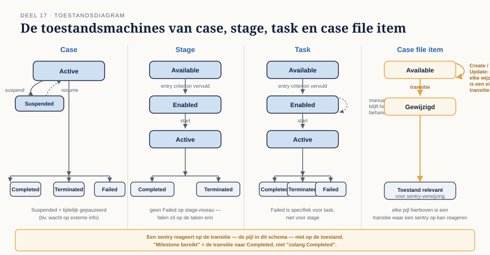
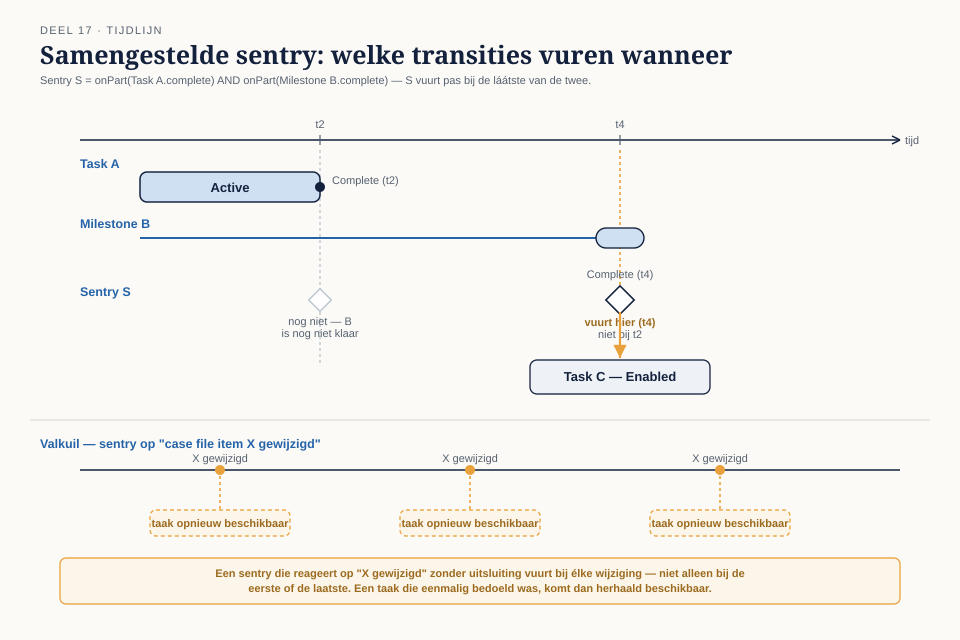
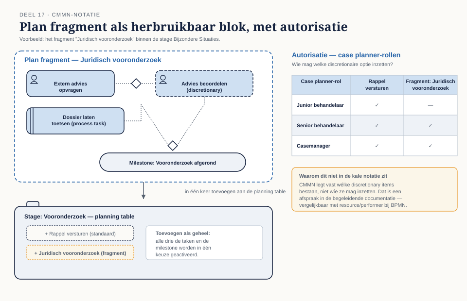
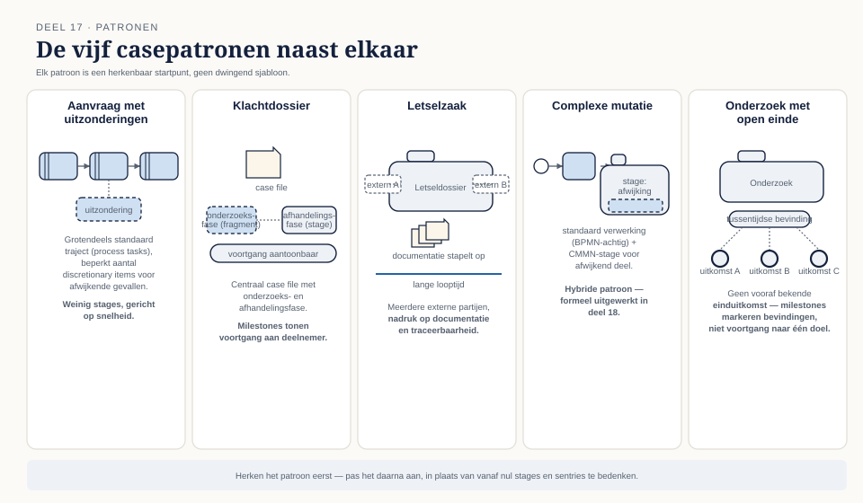

Deel 17 — CMMN gevorderd
Reader · Ductus-cursus BPMN, CMMN & DMN · niveau 2 (praktijk) · deel 17 van 30 · studielast ± 7 uur
Dit materiaal bereidt voor op het CMMN-onderdeel van het BPM+ Certificate van BPMInstitute.org — het zwaartepunt van die certificering. Het is geen vervanging van het officiële examen- of trainingsmateriaal. Let op: zoals in niveau 1 en in deel 9 besproken, wordt CMMN door minder platformen volledig uitgevoerd dan BPMN en DMN. De modellen in dit deel zijn primair analyse- en specificatiemodellen; raadpleeg de actuele Conductus-documentatie voor de stand van de uitvoeringsondersteuning.
Leerdoelen
Na dit deel kun je:
- De levenscyclus van case, stage, task en case file item toepassen.
- Samengestelde sentries ontwerpen en de timing ervan doorzien.
- Plan fragments en de planning table op praktijkniveau toepassen.
- Ontwerpen voor autonomie: bepalen wat je vastlegt en wat je loslaat.
- Casepatronen herkennen en toepassen.
- Caseperformance meten zonder vast pad.
17.1 Levenscycli volledig
Niveau 1, deel 7 introduceerde case, stage, task, milestone en sentry als bouwstenen. Om sentries met vertrouwen te kunnen ontwerpen (§17.2), moet je weten wat er precies met elk element gebeurt op elk moment — de levenscyclus als toestandsmachine.
Case. Van Active (de case is geopend en loopt) via mogelijk Suspended (tijdelijk gepauzeerd, bijvoorbeeld in afwachting van externe informatie) naar Completed (alle vereiste elementen zijn afgerond) of Terminated (voortijdig beëindigd, bijvoorbeeld omdat de aanvraag is ingetrokken) of Failed.
Stage en task. Van Available (nog niet gestart, mogelijk wachtend op een entry criterion) via Enabled (het entry criterion is vervuld, het element kan starten) naar Active (in uitvoering) en uiteindelijk Completed, Terminated, of — bij een task specifiek — Failed. Een task met de decorator manual activation blijft in Enabled totdat een behandelaar hem expliciet start.
Case file item. Van Available (het item bestaat, is aangemaakt) via mogelijke tussentoestanden bij wijziging naar een uiteindelijke toestand die relevant is voor sentries die op dit item reageren.
Waarom je dit moet kennen om sentries te ontwerpen. Een sentry reageert op een transitie — het moment waarop een element van de ene naar de andere toestand overgaat, niet op een toestand op zich. "Wanneer de milestone bereikt wordt" betekent: bij de transitie naar Completed, niet "zolang de milestone Completed is". Dit onderscheid is subtiel maar cruciaal: een sentry die op de verkeerde transitie let, vuurt op het verkeerde moment of helemaal niet.
17.2 Sentries in detail
Samengestelde criteria. Een sentry kan meerdere on-parts combineren (bijvoorbeeld: zowel het voltooien van taak A als het bereiken van milestone B), en de if-part kan een samengestelde FEEL-expressie zijn die meerdere case file items tegelijk raadpleegt. Hoe meer elementen een sentry combineert, hoe lastiger het wordt om te doorzien wanneer hij precies vuurt — een directe parallel met de leesbaarheidsgrens die niveau 1, deel 5 al voor BPMN-modellen stelde.
Timing. Twee sentries kunnen, op het oog, om dezelfde reden vuren maar op een andere volgorde reageren, afhankelijk van welke transities eerst plaatsvinden. Een veelvoorkomende valkuil: een sentry die reageert op "case file item X gewijzigd" vuurt bij élke wijziging van X, niet alleen bij de eerste of de laatste — als het model dat niet expliciet uitsluit, kan een taak die maar één keer bedoeld was, meerdere keren beschikbaar komen.
De valkuil van sentries die nooit vuren of juist te vroeg vuren. Een sentry die verwijst naar een milestone die in de praktijk nooit wordt bereikt (bijvoorbeeld door een typefout in de verwijzing, of een milestone die zelf een onbereikbare voorwaarde heeft) laat het bijbehorende element voor altijd in Available hangen — een dode tak in het model die pas bij uitvoering aan het licht komt. Omgekeerd vuurt een sentry met een te ruime if-part (bijvoorbeeld een conditie die bij de meeste gevallen toch waar is) eerder dan bedoeld, en biedt daarmee schijnzekerheid over wanneer iets "pas relevant wordt".
17.3 Plan fragments en planning table
Een plan fragment is een herbruikbaar blok van discretionair werk — een groep taken en/of stages die samen een logische eenheid vormen en die, als geheel, aan de planning table kunnen worden toegevoegd. In plaats van vijf losse discretionary items apart aan te bieden, kan een behandelaar in één keer een heel fragment toevoegen (bijvoorbeeld: "start het juridisch vooronderzoek", wat drie samenhangende taken tegelijk activeert).
Autorisatie: wie mag wat toevoegen. Niet elke discretionary optie hoort voor elke behandelaar beschikbaar te zijn. Een junior behandelaar mag wellicht alleen de standaard discretionary items zien, terwijl een senior behandelaar toegang heeft tot plan fragments die verdergaande interventies inzetten (bijvoorbeeld het inschakelen van een externe partij). Dit autorisatievraagstuk is niet in de kale CMMN-notatie zelf op te lossen — het vereist een expliciete afspraak in de bijbehorende documentatie over wie welke case planner-rechten heeft, vergelijkbaar met de resource/performer-koppeling die deel 14, §14.4 voor BPMN behandelde.
17.4 Ontwerpen voor autonomie
De kernvraag van casemanagement, scherper gesteld dan in niveau 1: hoeveel leg je vast?
Te veel vastleggen. Een casemodel met sentries voor elke denkbare situatie, weinig discretionary ruimte, en strikte volgordelijkheid tussen elementen, is in wezen een BPMN-proces met CMMN-symbolen (het antipatroon uit niveau 1, deel 8, §8.4, hier herhaald op een dieper niveau). De behandelaar ervaart het model als een keurslijf en gaat het — in de praktijk, buiten het systeem om — omzeilen: aantekeningen buiten het systeem, telefoontjes die niet worden vastgelegd, workarounds die precies het soort onzichtbare praktijk creëren die deel 12's discovery-technieken juist proberen bloot te leggen.
Te weinig vastleggen. Een casemodel dat alles aan de discretie van de behandelaar overlaat, zonder milestones, zonder verplichte elementen, biedt geen sturing en geen verantwoording. Een proceseigenaar kan dan niet zien of het werk goed verloopt, en een toezichthouder kan niet zien of de organisatie in control is.
De balans. Leg vast wat aantoonbaar altijd moet gebeuren (required elementen, milestones die verantwoording mogelijk maken) en laat los wat daadwerkelijk per geval verschilt. Deze balans is niet universeel — ze verschilt per type dossier, en het vaststellen ervan is precies het gesprek dat een consultant met een opdrachtgever voert, niet een technische instelling die je automatisch goed zet.
17.5 Patronen
Vijf terugkerende structuren in casemodellen, elk met een kenmerkende opbouw:
- Aanvraag met uitzonderingen — een grotendeels standaard traject (vaak met process tasks naar BPMN, niveau 1, deel 8, §8.2) met een beperkt aantal discretionary items voor afwijkende gevallen. Weinig stages, weinig milestones, gericht op snelheid.
- Klachtdossier — een centraal case file met een onderzoeksfase (vaak als plan fragment) en een afhandelingsfase, met milestones die de voortgang naar de deelnemer aantoonbaar maken.
- Letselzaak — lange looptijd, meerdere externe partijen (elk mogelijk als eigen collapsed pool in een gekoppeld BPMN-proces), en een sterke nadruk op documentatie en traceerbaarheid vanwege de juridische context.
- Complexe mutatie — een hybride patroon: een BPMN-achtige kern voor de standaardverwerking, met een CMMN-stage voor het gedeelte dat afwijkt (dit patroon wordt in deel 18 formeel uitgewerkt).
- Onderzoek met open einde — geen vooraf bekende einduitkomst; de milestones markeren tussentijdse bevindingen in plaats van voortgang naar een vaststaand doel, en de case kan eindigen in meerdere, wezenlijk verschillende uitkomsten.
Het herkennen van welk patroon van toepassing is, versnelt het ontwerp aanzienlijk — in plaats van vanaf nul te bedenken welke stages en sentries nodig zijn, begin je bij een patroon en pas je het aan.
17.6 Meten aan cases
Niveau 1, deel 2, §2.5 introduceerde CSF en KPI voor processen met een vast pad. Cases hebben geen vast pad, wat de meting fundamenteel anders maakt.
Doorlooptijd zonder vast pad. Je kunt geen gemiddelde doorlooptijd per stap meten zoals bij BPMN, omdat er geen vaste stappen zijn. Wat je wel kunt meten: de tijd tussen opening en elke milestone, en de totale doorlooptijd tot Completed — beide met een grote spreiding die inherent is aan het dossierkarakter, niet per se een teken van een probleem.
Workload. Het aantal actieve discretionary items en open tasks per behandelaar geeft een indicatie van werkdruk, ook zonder een vast pad om tegen te meten.
Escalatie. Hoe vaak wordt een plan fragment ingezet dat wijst op een afwijking van het normale traject (bijvoorbeeld: hoe vaak wordt "juridisch vooronderzoek" ingezet bij klachten)? Een stijgende trend hierin is zelf een signaal, los van individuele dossiers.
Wat je wel en niet kunt sturen. Je kunt de gemiddelde doorlooptijd tot een milestone beïnvloeden (bijvoorbeeld door capaciteit bij te sturen), maar je kunt niet, zoals bij een BPMN-proces, een individuele stap versnellen die er per definitie niet in vaste vorm is. Sturing bij cases werkt op het niveau van capaciteit en discretie-gebruik, niet op het niveau van individuele stappen.
Kernbegrippen
Levenscyclus (case/stage/task/case file item) — de toestanden en transities van elk element · Transitie — het moment waarop een sentry reageert, niet een toestand op zich · Plan fragment — een herbruikbaar blok discretionair werk · Case planner-autorisatie — wie welke discretionary opties mag inzetten · Ontwerpen voor autonomie — de balans tussen vastleggen en loslaten · Casepatronen — aanvraag met uitzonderingen, klachtdossier, letselzaak, complexe mutatie, onderzoek met open einde
Examenrelevantie
Dit deel is het zwaartepunt van het CMMN-onderdeel van het BPM+ Certificate — de certificering waar CMMN het meest expliciet en diepgaand wordt getoetst, in tegenstelling tot OCEB 2 waar CMMN beperkter aan bod komt.
Leeswijzer bij de specificatie
- CMMN 1.1 — het hoofdstuk over de levenscyclus van case, stage, task en case file item (state machines), het hoofdstuk over sentries en planning tables in detail.
Figurenlijst



